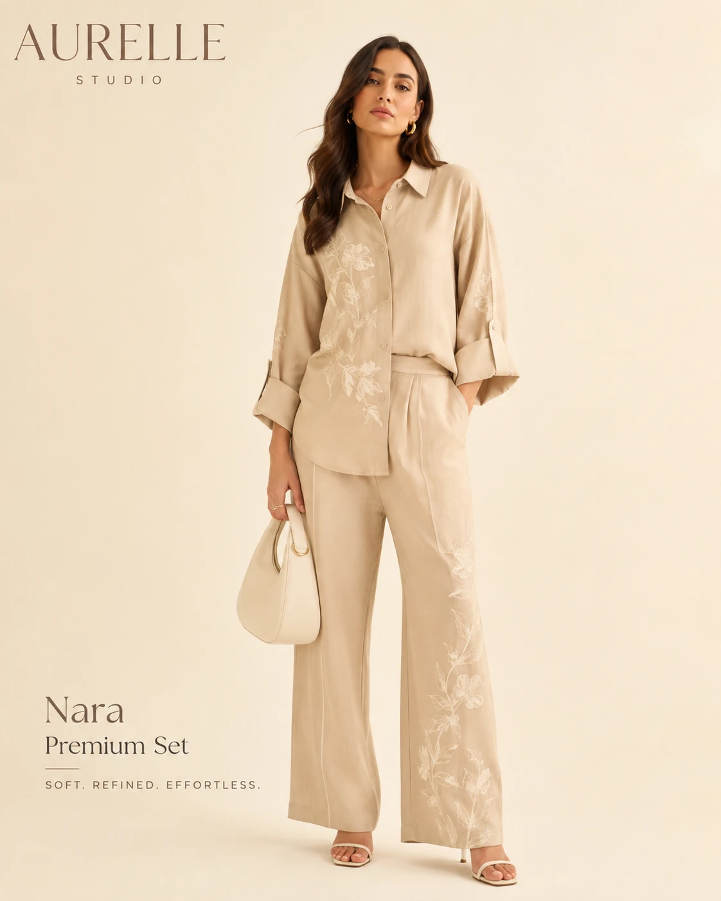
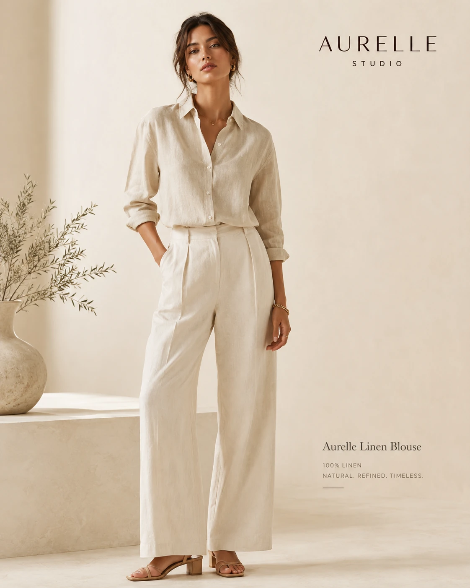

WEB APPLICATION • BUSINESS SYSTEM • DIGITAL SOLUTION
Membangun Sistem Digital untuk Bisnis yang Ingin Bergerak Lebih Cerdas.
Saya M.Hilman Alfiqri, Web Application Developer & Digital Solution Builder yang merancang website, aplikasi bisnis, dashboard, sistem operasional, dan solusi digital berdasarkan kebutuhan nyata sebuah bisnis.
Website • Web Application • Business System • Dashboard • PWA • Mobile Integration
Executive DashboardOperasional Hari Ini
N
NEXORA MobileWorkspace
Hari ini3 pekerjaan
09:00
MaintenanceKebayoran
Aktif12:30
InspectionCilandak
NextJadwal Service12 Pekerjaan Hari Ini
Field Team8 Teknisi Aktif
InvoiceInvoice Dibuat
TENTANG SAYA
Sistem yang Baik Dimulai dari Masalah Bisnis yang Nyata.
Saya mengembangkan solusi digital dengan pendekatan yang berangkat dari kebutuhan operasional bisnis. Fokusnya bukan hanya membuat interface yang terlihat modern, tetapi menyusun workflow, data, akses pengguna, dan fitur agar sistem benar-benar membantu pekerjaan sehari-hari.
Mulai dari pengelolaan pelanggan, jadwal, teknisi, invoice, dashboard, autentikasi hingga integrasi mobile, setiap bagian dirancang agar mudah digunakan, dapat dikembangkan, dan tetap relevan dengan kebutuhan bisnis.
Business-Oriented
Fitur ditentukan dari workflow dan masalah operasional yang perlu diselesaikan.
Custom Solution
Struktur sistem dibangun untuk kebutuhan aktual, bukan sekadar template generik.
Scalable Development
Arsitektur aplikasi disiapkan agar dapat berkembang bersama kebutuhan bisnis.
KEAHLIAN
Membangun Produk Digital yang Menghubungkan Bisnis, Data, dan Pengguna.
FEATURED CAPABILITY
Business System Development
Merancang aplikasi operasional yang menyatukan customer, workflow, dashboard, akses pengguna, database, dan aktivitas lapangan dalam satu sistem yang lebih terstruktur.
Web Application
Aplikasi web interaktif dengan workflow dan data terintegrasi.
Responsive Interface
Interface konsisten untuk desktop, tablet, dan smartphone.
Authentication
Login serta pembagian akses berdasarkan peran pengguna.
Cloud Database
Pengelolaan data aplikasi melalui database cloud.
Dashboard
Monitoring aktivitas dan informasi penting bisnis.
PWA
Pengalaman aplikasi menggunakan teknologi web modern.
Mobile Integration
Integrasi web application dengan perangkat mobile hybrid.
HTML5CSS3JavaScriptSupabase
PostgreSQLVercelCapacitorPWAREST API
SELECTED WORK
Produk Digital yang Dibangun dari Kebutuhan yang Berbeda.
01
AC SERVICE MANAGEMENT
NEXORA SERVICE
Premium AC Service Management System untuk mengelola dashboard operasional, pelanggan, jadwal, teknisi, nota, invoice, monitoring status lapangan, aktivitas teknisi, backup, dan pengaturan dalam satu interface.
DashboardSelamat Datang KembaliRingkasan operasional service AC hari ini
AD
DEMO OPERATIONAL DATA
Operasional Hari Ini
20 Agustus 2026
Rizky AdityaDikerjakan · Budi SantosoDikerjakan
Dimas PratamaJOB-2026-0124Di Perjalanan
Andi SaputraPT MandalaTiba
N
NEXORA SERVICEINV-2026-0084
PELANGGANBudi SantosoCuci AC · 2 unit
TotalRp170.000
SimpanCetakKirim Invoice
Monitoring TeknisiDi Perjalanan · Dikerjakan
WhatsApp InvoiceInvoice Terkirim
PROJECT OVERVIEW
Business management interface yang fokus pada workflow service AC dari pekerjaan sampai invoice.
Versi terbaru NEXORA dirancang sebagai portfolio web application dengan visual premium light-green. Demo mencakup login animatif, dashboard, pembuatan nota dengan kalkulasi otomatis, riwayat invoice, jadwal pekerjaan, pelanggan, teknisi, monitoring status lapangan tanpa map, aktivitas teknisi yang menampilkan identitas dengan jelas, backup, dan pengaturan.
Buka Demo NEXORAPremium Operations Dashboard
KPI, chart, jadwal hari ini, quick actions, serta aktivitas terbaru dalam visual SaaS light-green.
Nota & Invoice Workflow
Multiple service item, diskon, pajak, pembayaran, live invoice preview, simpan, cetak, dan alur kirim WhatsApp.
Technician Status Monitoring
Monitoring tanpa map yang menjelaskan teknisi sedang dijadwalkan, di perjalanan, tiba, dikerjakan, selesai, atau offline.
Clear Technician Activity
Timeline aktivitas dengan nama teknisi, waktu, pelanggan, Job ID, layanan, status, dan deskripsi pekerjaan.
HTML5CSS3Vanilla JavaScriptlocalStorageResponsive UIServerless API ScaffoldStatic Hosting
02
FASHION E-COMMERCE
AURELLE STUDIO
Premium fashion e-commerce experience dengan katalog produk, quick view, wishlist, cart, search, filter, checkout flow, dan mobile-first shopping interface.
AURELLE STUDIOHome · Collection · New Arrival · Best Seller
PREMIUM MODERN FASHION LABEL
Elegansi Modern Untuk Setiap Momen
Fashion premium dengan desain modern dan pengalaman belanja yang elegan.




PROJECT OVERVIEW
Fashion storefront yang terasa seperti brand, bukan template toko online.
Project ini mengeksplorasi pengalaman D2C fashion dengan presentasi produk yang editorial, shopping interaction yang jelas, serta layout yang tetap nyaman digunakan pada desktop maupun smartphone.
Buka Demo AURELLEPremium Product Catalog
Product grid, badge, rating, dan visual fashion yang konsisten.
Shopping Interactions
Quick view, wishlist, cart, search, filter, sorting, dan quantity flow.
Checkout Experience
Multi-step checkout demo untuk pengiriman, pembayaran, dan review.
Mobile-First UI
Product grid, drawer, bottom sheet, dan touch interaction untuk smartphone.
HTML5CSS3Vanilla JavaScriptlocalStorageResponsive UIStatic Hosting
LAYANAN
Solusi Digital yang Dapat Disesuaikan dengan Cara Bisnis Anda Bekerja.
Website Bisnis
Website profesional untuk menampilkan bisnis, layanan, informasi, dan identitas brand dengan struktur yang jelas.
Custom Web Application
Aplikasi web yang dirancang mengikuti kebutuhan operasional bisnis.
Business Management System
Sistem untuk mengelola pelanggan, pegawai, teknisi, jadwal, pekerjaan, transaksi, dan workflow secara terpusat.
Admin Dashboard
Dashboard monitoring untuk informasi dan aktivitas penting bisnis.
PWA & Mobile Web App
Web application yang dioptimalkan untuk penggunaan melalui smartphone.
Custom Digital Solution
Solusi khusus untuk proses bisnis yang membutuhkan sistem di luar website standar.
CARA KERJA
Dari Permasalahan Bisnis Menjadi Sistem yang Siap Digunakan.
Memahami Kebutuhan
Mempelajari bisnis, pengguna, masalah, dan workflow.
Perencanaan
Menentukan struktur sistem, fitur, database, dan pengalaman pengguna.
UI/UX
Merancang interface yang jelas, profesional, dan mudah digunakan.
Development
Mengembangkan fungsi aplikasi dan integrasi data.
Testing
Menguji fungsi, responsivitas, workflow, dan pengalaman pengguna.
Deployment
Mempublikasikan aplikasi agar dapat digunakan secara online.
Pengembangan
Menyempurnakan sistem berdasarkan kebutuhan berikutnya.
MARI BANGUN SESUATU YANG BERGUNA
Punya Ide atau Sistem yang Ingin Dibangun?
Ceritakan kebutuhan bisnis Anda. Saya akan membantu menerjemahkannya menjadi solusi digital yang lebih terstruktur dan mudah digunakan.
KONTAK
Mari Terhubung.
WhatsApp
Chat WhatsApp ↗
+62 878-7241-2014
Jalur utama untuk berdiskusi mengenai kebutuhan, workflow, dan ruang lingkup project.
Email
Kirim Email ↗
hilmanalfiqri01@gmail.com
Untuk brief, dokumen, atau pembahasan project yang membutuhkan konteks lebih formal.